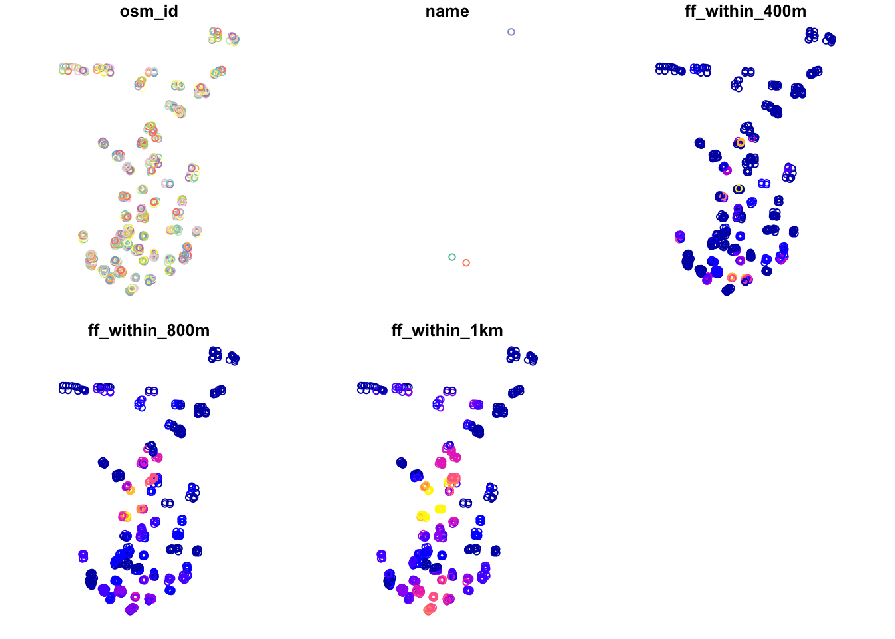

12 Accessibility & Network Analysis (Optional)
For this Optional Practical, we will focus on how we can use road network analysis to calculate distance-based measurements between a set of Origin and Destination points.
In simple terms, a distance-based measurement will calculate how far is our destination (or set of destinations) from our origin (or set of origins) - this measure can be provided in a conventional distance unit (e.g. metres, kilometres) or can be transformed into a time-based measure instead.
These distance-based measurements are incredibly useful for calculating accessibility metrics that can be used in public health, environment and infrastructure applications, such as identifying areas with potential food deserts or with low health or greenspace provision.
For example, we can answer questions such as: how many parks are within a 10 minute walk of each household within a city? What is the “service area” of each hospital within a city - and how many people (and who) does not live within one? What is the shortest distance between a school and a convenience store?
These questions can be used to study accessbility and inequality issues highlighted above (and many more)!
In this Optional Practical, we study the accessibility of school children to fast-food outlets within a city to determine if there is a spatial pattern in schools that have a high (and therefore unsuitable) level of access to fast-food.
The metrics we calculate today could go on to be used to compare to socio-economic information of the schools, as it has been found within many studies in the UK, New Zealand and the USA that there is a strong association between local deprivation and/or ethnicity and the density of as well as geographic access to fast food outlets (Pearce et al, 2007; Public Health England, 2018; Elbel et al, 2019), which may also help with understanding of potential environmental causes of obesity (Davis and Carpenter, 2009).
(Road) Network Analysis in R
Until recently, calculating these distance-based measurements in R would have been incredibly complex - and you would likely have to resort to ArcGIS (or QGIS), where these Origin-Destination calculations or Drive-Time buffers are relatively easily to implement and have served Esri particularly well as part of their own commerical business selling to logistic firms!
Whilst (graph-based) network analysis has proven an incredibly popular data science technique and has been integrated into R through packages such as igraph, ggraph and tidygraph, the same can’t be said for network analysis within geographic space! However, with more and more spatial data scientists invovled in R and package development, the last year or so has seen new packages emerge that contain functions that enable the spatial analysis of networks!
The three key packages/libraries to be aware of are:
-stplanr from Robin Lovelace and Richard Ellison. stplanr facilitates common transport planning tasks including: downloading and cleaning transport datasets; creating geographic ‘desire lines from origin-destination (OD) data; route assignment, via the SpatialLinesNetwork class and interfaces to routing services such as CycleStreets.net; calculation of route segment attributes such as bearing and aggregate flow; and `travel watershed’ analysis. You can read more about the library here.
-sfnetworks from Lucas van der Meer, Lorena Abad, Andrea Gilardi and Robin Lovelace. Whilst the package is still in a beta format, the aim of the package is to provide a type of spatial network that can be used with both sf and tidygraph.
-dodgr from Mark Padgham and Andreas Petutschnig (plus contributors). dodgr is an R package for calculating Distances On Directed Graphs. The package may be used to calculate a matrix of distances between a given set of geographic coordinates.
In addition, a recent slide put together by Dr Malcom Morgan from the Institute for Transport Studies at the University of Leeds details a few additional liraries that you might be interested in if transport planning is your thing!

As you might be able to tell from these brief descriptions above, for our practical today - and our aim to calculate distance-based measurements- we will be using the dodgr library!
However, there is a short practical available to demonstrate stplanr for potential routing applications within the Geocomputation with R book, available online here.
In addition, you might look into OpenTripPlanner or hereR if you’re looking to create isochrones, which are essentially (road) network-based buffers and look like this:
 Example Isochrone: A public transport isochrone map for the London Bank station showing 15, 30 and 45-minute catchment areas. Map: Eric van Rees / GISLounge
Example Isochrone: A public transport isochrone map for the London Bank station showing 15, 30 and 45-minute catchment areas. Map: Eric van Rees / GISLounge
These buffers could be used to calculate the number of crimes within 10 minutes walk or drive of a specific geographic feature, e.g. they could be used to potentially improve our previous bike theft analysis methodologies by looking at all bike thefts within a minute’s walk or 80 metres (which is apparently the average distance a person may walk in a minute!). They are also a really useful visualisation tool, communicating effectively specific distances away from a feature, as you can see above.
More information on Isochrones
If the map above has got you interested, you can read more about isochrones at GISLounge, which has a short but informative article on their use within public transport, accessible here.
Whilst you might not have time to look at either of these at the moment, you might just want to make a note of these practicals for future reference, e.g. for your dissertations.
For this Optional Practical, we’ll stick with producing one type of a distance-based measurement that you could use for further analysis, for example, if you are looking at the accessibility of a specific resource to a population.
Optional Practical: Calculating Distance-Based Measurements in R
From a computational and analytical perspective, this practical takes you through a simple approach to measuring either distances or time between two points on a road network - for multiple points.
You will construct a road network from OpenStreetMap, and utilise this network along with the dodgr library to calculate your chosen metrics between two coordinate datasets (otherwise known as an Origin-Destination matrix).
Our analysis case study
For this practical, we’ll be using Portsmouth in the U.K. as our area of interest for our analysis (woohoo, a change from London!).
The city is located on the south coast of the U.K., and is actually the only city in the U.K whose population density exceeds that of London (in 2011)!
One of the reasons is that the city primarily occupies an outcrop of land on the south-coast (an island called Portsea Island), and extends only slightly into the north, past the M27.
There are lots of geographical issues and challenges within the city that you could investigate, including weaknesses in Portsmouth’s current road provision - there are only three main roads in and out of the island!
One prominent topic within the city is the issue of public health and childhood obesity. According to figures released in March 2020 by Public Health Engalnd, more than one in three school pupils are overweight or obese by the time they finish primary school within the city - higher than the national average of one in four. One potential contributor to the health crisis is the ease and availability of fast-food in the city.
From the local newspaper in the city, the Portsmouth News, Healthwatch Portsmouth Chairman Roger Batterbury was quoted: ‘For people in areas of deprivation, every penny counts and when it comes to buying food, the cheapest option is important but that is rarely the healthy choice.’ See the original article here.
The City Council itself has aimed to address the issue by banning new fast-food takeaways within a 400m range of schools – it started with a pilot at Arundel Court Primary Academy in Landport in September 2019. Since the pilot, no new hot food takeaways will be able to open within a 400m radius of the school.
To assess the likely impact of this policy, we will investigate the accessibility of fast-food outlets for school children - we want to know if there is a geography to accessibility that could be used within future analysis to understand whether certain socio-economic demographics are more exposed to fast-food then others. We will measure accessibility by understanding how many fast-food outlets are within specific walking distances of each school, starting at 400m, then 800m and finally a 1km walking distance. We’ll then aggregate these counts at the Lower Super Output Area (LSOA) and compare across the city.
To get this data ready for our spatial and socio-economic analyses, we’ll need to first calculate the distances between our schools and fast-food outlets.
This involves calculating the shortest distance a child would walk between a school and a fast-food outlet, using roads or streets.
This means we need to conduct a road network analysis between each school and fast-food outlet - just what this practical is designed to do!
Let’s get started!
Workshop Housekeeping
Let’s get ourselves ready to start our practical by first adding our relevant libraries, downloading the relevant data and loading this within our script.
Setting up your script
Open a new script (preferably within your GEOG0030 project) and save this script as
OP-OD-fastfood-analysis.r.At the top of your script, add the following metdata (substitute accordingly):
Dependencies (aka libraries)
Now we’ll install the libraries we need for this practical.
For our network analysis, we will be using the very recent (as of August 2020!) dodgr library.
Prior to the creation of dodgr, this analysis would have been incredibly complex to do. Whilst R has had many network analysis libraries, the majority of these focus on utilising networks in graphical spaces, rather than geographical.
Creating measures of distance or time therefore would be more complex as you would need to transform your graph distances into geographical ones - but thanks to dodgr not anymore!
One thing to note, in terms of dodgr’s limitations is that all calculations currently need to be run in WGS84/4236. As a result, our calculations will not be as accurate as if we could run the same code in British National Grid. This is why we do not transform the CRS of our data in this practical.
We’ll also be loading several other libraries to help with our analysis, including:
-here: to direct to our working directory
-magrittr: to allow us to use the pipe function (%>%) within our work, to enable efficient programming.
-osmdata: to download OSM data from the OSM API server.
NB: dodgr also has an in-built function to enable you to create a network download directly for use within their libraries (without any of the formatting you’ll see us use), but this function (currently) does not provide the flexibility of determining what type of network you want to construct. In our case, we want to omit any motorways from our network to ensure our network represents where people will walk. Hence we’ll use the osmdata library to create our pedestrian-friendly network!
-sf: the Simple Features library, used to encode spatial data.
-expss: this library provides many functions that are usually seen in Excel or SPSS. Here we use the count_if function in our code (you’ll see why later on). This functionality probably can be replaced by base libraries in R and a few additional lines of code, but this was a simple and quick solution to what we needed to make this practical work!
tmap: to map our resulting datasets.
Make sure to install any new libraries/packages using the R console first, e.g.:
install.packages(c('osmdata', 'dodgr', 'expss'))
Let’s first load our libraries.
- Within your script, add the following libraries for loading:
# Load our libraries
library(here)
library(magrittr)
library(osmdata)
library(dodgr)
library(sf)
library(expss)
library(tmap)Remember to select the lines of code you want to run and press CMD (Mac)/CTRL(Windows) + Enter/Return - we won’t remind you to run each line of code in the remainder of the practical sessions.
Datasets for this week
Once we’ve loaded our libraries and set our directory, the next step in our practical is to download the data for this week.
As the majority of this practical actually involves downloading and processing OpenStreetMap data for both our network and Origin-Destination datasets ready for our analysis, we will cover this in a separate section.
For now, you only need to download one dataset that will help with the visualisation of our results: boundary data that contains an outline of Portsmouth.
To obtain this outline, you’ll need to download the Major Towns and Cities Boundaries dataset, available here.
Make sure you download the shapefile and store it within your boundaries folder. I’ve renamed the unzipped subfolder to city_outlines as you can see below in our data path.
We then need to load it into our script and filter the full dataset to only contain the city of Portsmouth - to achieve this we’ll use the filter function from the dplyr library.
- Load Major Towns and Cities Boundaries dataset into R and extract Portsmouth City outline:
# Load Towns and Cities boundary dataset and subset to Portsmouth
portsmouth_city <- st_read("data/raw/boundaries/city_outlines/Major_Towns_and_Cities__December_2015__Boundaries.shp",
stringsAsFactors = FALSE) %>%
dplyr::filter(tcity15nm == "Portsmouth")## Reading layer `Major_Towns_and_Cities__December_2015__Boundaries' from data source `/Users/Jo/Code/GEOG0030/data/raw/boundaries/city_outlines/Major_Towns_and_Cities__December_2015__Boundaries.shp' using driver `ESRI Shapefile'
## Simple feature collection with 112 features and 5 fields
## Geometry type: MULTIPOLYGON
## Dimension: XY
## Bounding box: xmin: -4.204842 ymin: 50.34101 xmax: 1.378014 ymax: 55.03117
## CRS: 4326Downloading our road network from OpenStreetMap
To create our network and OD datasets, we will need to first download data directly from OpenStreetMap using a set of specific queries. Once our data is downloaded, we will then need to extract the data from our query results - as shown in the next section.
We’ll go ahead and focus on downloading then extracting our road network data.
First, to download the data, we’ll use osmdata library and the add_osm_feature function. You can find out more about this and how to construct your queries here.
To use the function, we need to provided it with either a bounding box of our area of interest (AOI) or a set of points, from which the function will create its own bounding box.
We’ll use the former approach, and a very useful tool for extracting your bounding box can be found here. You simply navigate to your AOI and then use the rectangle + arrow button to access a tool that will draw you a bounding box you can then edit.
Alternatively, you can use the pentagon button to create your own polygon. At the bottom of the webpage you’ll see options to copy and paste your box. Choose CSV, ready to copy and paste your coordinates into the code below.
To download our road network dataset, we first define a variable to store our bounding box coordinates, p_bbox.
We then use this within our osm query to extract specific types of highways within that bounding box - the results of our query are then stored in an osmdata object (this one is for sf). You can find out more info about the osmdata object in Section 3 of the osmdata vignette practical linked above.
- Create bounding box and download road network from OpenStreetMap:
# Define our bbox coordinates, here our coordinates relate to Portsmouth
p_bbox <- c(-1.113197, 50.775781, -1.026508, 50.859941)
# Pass our bounding box coordinates into the OverPassQuery (opq) function
osmdata <- opq(bbox = p_bbox) %>%
# Pipe this into the add_osm_feature data query function to extract our highways
# Note here, we specify the values we are interested in, omitting motorways
add_osm_feature(key = "highway", value = c("primary", "secondary", "tertiary", "residential",
"path", "footway", "unclassified", "living_street", "pedestrian")) %>%
# And then pipe this into our osmdata_sf object
osmdata_sf()You should now see an osmdata variable appear in your environment window - as explained in the linked practical, the osmdata object contains the bounding box of your query, a time-stamp of the query, and then the spatial data as osm_points, osm_lines, osm_multilines and osm_polgyons (which are listed with their respective fields also detailed). Some of the spatial features maybe empty, depending on what you asked your query to return.
What is important to know is that the actual spatial data contained in an osmdata object can be extracted - and will be in the sf format, when using the osmdata_sf() function (as we did) or in the sp format if you use the osmdata_sp() function instead.
Extracting our road network from our OSM download
Our next step therefore is to extract our spatial data from our osmdata object to create our road network dataset. This is in fact incredibly easy, using the traditional $ R approach to access these spatial features from our object.
Deciding what to extract is probably the more complicated aspect of this - mainly as you need to understand how to represent your road network, and this will usually be determined by the library/functions you’ll be using it within.
Lucikly, I’ve done all the pre-reading for you and we want to pass in preference what is known as edges of the network, i.e. the lines that represent the roads, rather than the nodes of the network, i.e. the points that represent the locations at which the roads intersect.
The latter can be used by the dodgr library, but edges are used in preference due to the unintended data errors than can occur if you delete nodes, versus deleting edges from a network. I won’t explain this in any further detail, but in preference, choose your edges!
Despite this, here we will extract both the points/nodes and the lines/our road edges within our network - as we might want to use the former for visualisation later on in our analysis. During extraction, we’ll also reduce the amount of fields the spatial data contains.
For our points, we’ll just keep the osm_id, just in case we need to refer to this later.
For our lines, we’ll keep a little more information that we might want to use either within our road network or analysis, including the type of highway, what the maximum speed is on the road, and whether the road is one-way or not.
Remember, OpenStreetMap is an open-source of spatial data, therefore these fields may be not complete for each road, and the accuracy and currency of these fields cannot be guaranteed.
- Extract our road network from the
osmdataobject:
# Extract our spatial data into variables of their own
# Extract the points, with their osm_id.
ports_roads_nodes <- osmdata$osm_points[, "osm_id"]
# Extract the lines, with their osm_id, name, type of highway, max speed and
# oneway attributes
ports_roads_edges <- osmdata$osm_lines[, c("osm_id", "name", "highway", "maxspeed",
"oneway")]We should now have two additional variables in our Environment, snd we’re ready to create our road network dataset - or in network terms, our graph.
To check our dataset, we can quickly plot the edges of our road network using the plot() function.
- Plot our road network data,
ports_roads_edges:
This looks like Portsmouth to me! And our main plot for the dataset (osm_id) looks pretty complete.
Our other plots are also interesting to look at, including where there are one way streets in Portsmouth - as well as the predictable similarities between the highway type and maxspeed variables.
Downloading and extracting our Origin-Destination point datasets for analysis
Before we construct our graph, we need to also create our ORIGIN and DESTINATION points, i.e. the datasets we wish to calculate the distances between.
As we will use the dodgr_dists function to calculate these distances, according to the dodgr documentation, these points need to be in either a vector or matrix format, containing the two coordinates for each point for the origins and for the destintions.
For our Portsmouth scenario, we are interested in calculating the shortest distances between schools and fast-food outlets, therefore we need to download these datasets ready for our use - and we’ll use OpenStreetMap and the same process as above to do this.
Note, if you are using this practical to help guide your own analysis and already have your OD datasets ready, you can skip this step!
Following a similar structure to our query above, we’ll use our knowledge of OpenStreetMap keys and values to extract the points of origins (schools) and destinations (fast-food outlets) we are interested in,
- Download our Origin (schools) and Destination (fast-food outlets) data from OpenStreetMap:
# Download our schools from OSM, store in school variable We utilise the same
# bounding box coordinates stored as a variable in our session's memory.
schools <- opq(bbox = p_bbox) %>%
add_osm_feature(key = "amenity", value = "school") %>%
osmdata_sf()
# And our fast-food outlets (could add convenience stores - separate query)
ff_outlets <- opq(bbox = p_bbox) %>%
add_osm_feature(key = "amenity", value = "fast_food") %>%
osmdata_sf()We also need to then follow a similar extraction of our two datasets from the osmdata object as we did for our road dataset.
- Extract the spatial data from the resulting
osmdataobjects generated by our above queries:
# Extract our school points
ports_schools <- schools$osm_points[, c("osm_id", "name")]
# Extract our fast-food outlet points
ports_ff <- ff_outlets$osm_points[, c("osm_id", "name")]We now have our road network data and our OD points - we’re now ready to construct our network graph and run our network analysis!
Quality of OpenStreetMap data
In this analysis, we are highly reliant on the use of OpenStreetMap to provide data for both our Origins and Destinations.
Whilst in the UK OSM provides substantial coverage, it’s quality is not always guaranteed.
As a result, to improve on our current methodology in future analysis, we should investigate into a more official school dataset or at least validate the number of schools against City Council records and apply this as well to our fast-food outlets.
Running our network analysis and calculating distances
With any network analysis, the main data structure is a graph, constructed by our nodes and edges. To create a graph for use within dodgr, we pass our ports_roads_edges into the weight_streetnet function.
The dodgr library also contains weighting profiles, that you can customise, for use within your network analysis. These weighting profiles contain weights based on the type of highway, determined by the type of transportation the profile aims to model. Here we will use the weighting profile foot, as we’re looking to model walking accessibility.
Let’s create our graph!
- Create our network graph from our
ports_roads_edgesroad network dataset:
# Create network graph using are edge data, with the foot weighting profile
graph <- weight_streetnet(ports_roads_edges, wt_profile = "foot")Once we have our graph, we can then use this to calculate our network distances between our OD points.
Here we will use the dodgr_distances function, which you can find out more about in the its documentation.
In this function, we first pass our graph, then our Origin points (schools), in the from argument, and then our Destination points (fast-food outlets), in the to argument. There are several other arguments the function takes, which, again, you can read about in the documentation.
One thing to note is our addition of the st_coordinates function as we pass our two point datasets within the from and to functions.
In their current format, our point data is as an sf data frame, which the function cannot pass - we need to instead provide it with a vector or matrix. We can achieve this simply by using the st_coordinates function, which retrieves the coordinates of any (spatial) data frame in matrix form.
- Calculate distances between schools and fast-food outlets along our network, passing them as coordinates:
# Calculate distances between schools to fast-food stores
sch_to_ff_calc <- dodgr_distances(graph, from = st_coordinates(ports_schools), to = st_coordinates(ports_ff),
shortest = TRUE, pairwise = FALSE, quiet = FALSE)For our dataset, the query runs very quickly - a total of 876 x 294 calculations in a few seconds.
Let’s check our output.
- Print the first five rows of our calculation:
## 1 2 3 4 5 6 7 8 9 10
## 1 NA NA NA 9463.454 11016.352 2208.701 11696.053 2320.115 692.3284 1671.141
## 2 NA NA NA 3449.789 5002.687 4670.020 5682.388 4791.063 5839.7593 7245.162
## 3 NA NA NA 3443.303 4996.201 5103.137 5675.902 4614.546 6272.8757 7678.279
## 4 NA NA NA 3574.806 5127.705 5092.732 5807.406 4483.043 6262.4708 7667.874
## 5 NA NA NA 3495.296 5048.194 4734.519 5727.895 4704.968 5904.2575 7309.660
## 6 NA NA NA 3259.253 4812.151 5164.434 5491.852 5257.735 6334.1734 7739.576
## 11 12 13 14 15 16 17 18 19 20 21 22
## 1 1674.336 1691.717 1671.141 NA NA 2061.186 NA NA NA NA 3360.106 1697.704
## 2 7248.357 7265.738 7245.162 NA NA 6131.869 NA NA NA NA 5324.075 5882.229
## 3 7681.473 7698.854 7678.279 NA NA 5955.352 NA NA NA NA 5757.191 6315.346
## 4 7671.068 7688.449 7667.874 NA NA 5823.849 NA NA NA NA 5746.786 6304.941
## 5 7312.855 7330.236 7309.660 NA NA 6045.774 NA NA NA NA 5388.573 5946.728
## 6 7742.771 7760.152 7739.576 NA NA 6598.541 NA NA NA NA 5818.489 6376.644
## 23 24 25 26 27 28 29 30 31
## 1 580.8907 NA 3622.593 1357.423 3342.668 340.6474 1101.115 10909.362 2975.787
## 2 6203.3306 NA 2774.518 5199.969 5306.636 6440.7033 5897.087 4895.697 3535.822
## 3 6282.3932 NA 3207.635 5633.085 5739.753 6873.8198 5720.570 4889.211 3968.938
## 4 6150.8897 NA 3197.230 5622.680 5729.348 6863.4148 5589.067 5020.714 3958.533
## 5 6267.8288 NA 2839.017 5264.467 5371.135 6505.2016 5810.992 4941.204 3600.320
## 6 6697.7447 NA 3268.933 5694.383 5801.050 6935.1174 6363.759 4705.161 4030.236
## 32 33 34 35 36 37 38 39
## 1 2747.139 3529.495 2343.549 2830.942 2948.673 2948.673 735.5805 3422.806
## 2 4925.191 4224.381 4145.588 3500.338 4459.034 4459.034 6364.0671 5605.558
## 3 4748.675 4657.497 4578.704 3933.455 4282.517 4282.517 6123.8597 5429.041
## 4 4617.171 4647.092 4568.299 3923.050 4151.014 4151.014 5992.3562 5297.538
## 5 4839.096 4288.879 4210.086 3564.837 4372.939 4372.939 6428.5653 5519.463
## 6 5391.864 4718.795 4640.002 3994.752 4925.706 4925.706 6858.4812 6072.230
## 40 41 42 43 44 45 46 47 48
## 1 6244.3143 3417.214 9286.130 9587.860 9696.740 NA 3546.562 2688.493 7184.7213
## 2 430.5137 4987.878 3272.465 3574.195 3683.075 NA 3319.869 4492.357 951.6900
## 3 706.9277 5420.995 3265.979 3567.709 3676.589 NA 3752.986 4925.473 469.7334
## 4 836.3340 5410.590 3397.482 3699.213 3808.092 NA 3742.581 4915.068 601.2369
## 5 476.0206 5052.377 3317.972 3619.702 3728.582 NA 3384.368 4556.855 997.1968
## 6 768.2254 5482.292 3081.929 3383.659 3492.539 NA 3814.284 4986.771 444.4295
## 49 50 51 52 53 54 55 56 57 58 59
## 1 9093.538 9517.992 9605.030 NA NA NA NA 762.1435 2541.033 1009.477 1009.477
## 2 3079.873 3504.327 3591.365 NA NA NA NA 6089.9215 5099.280 5986.060 5986.060
## 3 3073.387 3497.841 3584.879 NA NA NA NA 6523.0380 4922.763 5809.544 5809.544
## 4 3204.890 3629.344 3716.383 NA NA NA NA 6512.6330 4791.260 5678.040 5678.040
## 5 3125.380 3549.834 3636.872 NA NA NA NA 6154.4198 5013.185 5899.965 5899.965
## 6 2889.337 3313.791 3400.830 NA NA NA NA 6584.3356 5565.952 6452.733 6452.733
## 60 61 62 63 64 65 66 67
## 1 1925.115 1365.276 2975.787 1244.659 2152.941 354.1211 688.6854 2190.683
## 2 6392.459 5856.210 3535.822 7116.510 5868.870 6551.5988 5668.9728 4825.993
## 3 5994.169 5899.384 3968.938 6939.993 5692.353 6783.5814 6102.0893 4649.476
## 4 5862.666 5767.881 3958.533 6808.490 5560.850 6652.0779 6091.6844 4517.973
## 5 6084.591 5920.708 3600.320 7030.415 5782.775 6616.0970 5733.4711 4739.898
## 6 6886.873 6350.624 4030.236 7583.182 6335.542 7046.0129 6163.3869 5292.665
## 68 69 70 71 72 73 74 75 76
## 1 2233.061 2147.060 NA 4840.919 2747.139 843.9919 614.8746 788.2592 2693.716
## 2 4783.615 4869.616 NA 1589.794 4925.191 6162.0203 6237.3145 6438.8652 5023.448
## 3 4607.098 4693.100 NA 2126.241 4748.675 5985.5035 6221.7360 6198.6578 4846.931
## 4 4475.595 4561.596 NA 1994.737 4617.171 5854.0001 6090.2325 6067.1544 4715.427
## 5 4697.520 4783.521 NA 1654.293 4839.096 6075.9252 6301.8128 6503.3635 4937.352
## 6 5250.287 5336.289 NA 2084.209 5391.864 6628.6926 6731.7287 6933.2794 5490.120
## 77 78 79 80 81 82 83 84 85 86 87 88
## 1 2693.716 728.304 NA NA NA NA NA NA 11696.053 11696.053 11696.053 11696.053
## 2 5023.448 5629.354 NA NA NA NA NA NA 5682.388 5682.388 5682.388 5682.388
## 3 4846.931 6062.471 NA NA NA NA NA NA 5675.902 5675.902 5675.902 5675.902
## 4 4715.427 6052.066 NA NA NA NA NA NA 5807.406 5807.406 5807.406 5807.406
## 5 4937.352 5693.853 NA NA NA NA NA NA 5727.895 5727.895 5727.895 5727.895
## 6 5490.120 6123.768 NA NA NA NA NA NA 5491.852 5491.852 5491.852 5491.852
## 89 90 91 92 93 94 95
## 1 11696.053 11696.053 11696.053 11536.679 6558.1420 6602.4023 6602.4023
## 2 5682.388 5682.388 5682.388 5523.014 544.4772 588.7376 588.7376
## 3 5675.902 5675.902 5675.902 5516.528 806.3543 850.6146 850.6146
## 4 5807.406 5807.406 5807.406 5648.032 937.8578 982.1181 982.1181
## 5 5727.895 5727.895 5727.895 5568.521 589.9841 634.2444 634.2444
## 6 5491.852 5491.852 5491.852 5332.479 405.2107 438.4697 438.4697
## 96 97 98 99 100 101 102 103 104
## 1 6557.874 NA NA 4504.263 5981.3182 4420.597 580.8907 597.1904 2681.864
## 2 1519.365 NA NA 2362.019 683.7597 3348.237 6203.3306 5981.4458 4420.377
## 3 1947.984 NA NA 2398.583 1112.3785 3384.801 6282.3932 6414.5623 4243.860
## 4 1915.757 NA NA 2267.080 1080.1518 3253.297 6150.8897 6404.1573 4112.357
## 5 1555.444 NA NA 2275.924 719.8384 3262.142 6267.8288 6045.9440 4334.282
## 6 2009.282 NA NA 2828.691 1173.6762 3814.909 6697.7447 6475.8599 4887.049
## 105 106 107 108 109 110 111 112
## 1 5131.806 5329.3289 5070.642 924.6992 5070.642 4057.267 752.9266 556.4247
## 2 1188.988 978.3912 1250.153 5736.3348 1250.153 3130.407 5564.7085 5825.8797
## 3 1622.105 1411.5077 1683.269 6169.4513 1683.269 3166.971 5997.8250 6258.9962
## 4 1598.625 1399.0652 1659.790 6159.0463 1659.790 3035.467 5987.4201 6248.5913
## 5 1240.412 1040.8519 1301.577 5800.8331 1301.577 3044.312 5629.2068 5890.3780
## 6 1683.403 1472.8054 1744.567 6230.7489 1744.567 3597.079 6059.1227 6320.2939
## 113 114 115 116 117 118 119 120
## 1 713.106 622.4875 597.1904 1194.845 3304.627 3203.170 5481.3779 6647.3136
## 2 6363.712 5759.8170 5981.4458 5092.803 4608.001 4519.133 847.8399 633.6488
## 3 6123.505 6192.9334 6414.5623 5525.920 5041.117 4952.249 1280.9564 895.5258
## 4 5992.001 6182.5285 6404.1573 5515.515 5030.712 4941.844 1187.6930 1027.0293
## 5 6428.210 5824.3152 6045.9440 5157.302 4672.499 4583.631 827.3796 679.1556
## 6 6858.126 6254.2311 6475.8599 5587.217 5102.415 5013.547 1342.2541 393.5585
## 121 122 123 124 125 126 127
## 1 6647.3136 6647.3136 6682.9803 6647.3136 6647.3136 6647.3136 6639.2049
## 2 633.6488 633.6488 669.3155 633.6488 633.6488 633.6488 625.5401
## 3 895.5258 895.5258 931.1925 895.5258 895.5258 895.5258 887.4171
## 4 1027.0293 1027.0293 1062.6960 1027.0293 1027.0293 1027.0293 1018.9206
## 5 679.1556 679.1556 714.8223 679.1556 679.1556 679.1556 671.0469
## 6 393.5585 393.5585 478.7795 393.5585 393.5585 393.5585 470.1991
## 128 129 130 131 132 133 134
## 1 6682.9803 6682.9803 6639.2049 6682.9803 6682.9803 6682.9803 6639.2049
## 2 669.3155 669.3155 625.5401 669.3155 669.3155 669.3155 625.5401
## 3 931.1925 931.1925 887.4171 931.1925 931.1925 931.1925 887.4171
## 4 1062.6960 1062.6960 1018.9206 1062.6960 1062.6960 1062.6960 1018.9206
## 5 714.8223 714.8223 671.0469 714.8223 714.8223 714.8223 671.0469
## 6 478.7795 478.7795 470.1991 478.7795 478.7795 478.7795 470.1991
## 135 136 137 138 139 140 141 142 143
## 1 6682.9803 6682.9803 10113.268 NA NA 5514.469 9446.842 9446.842 9398.462
## 2 669.3155 669.3155 6445.255 NA NA 1442.072 3433.177 3433.177 3384.797
## 3 931.1925 931.1925 6438.768 NA NA 1875.189 3426.691 3426.691 3378.311
## 4 1062.6960 1062.6960 6570.272 NA NA 1781.925 3558.195 3558.195 3509.814
## 5 714.8223 714.8223 6490.762 NA NA 1421.612 3478.684 3478.684 3430.304
## 6 478.7795 478.7795 6254.719 NA NA 1936.486 3242.641 3242.641 3194.261
## 144 145 146 147 148 149 150 151
## 1 8772.379 9398.462 9446.842 NA 11876.843 11884.118 11876.429 9799.081
## 2 2758.714 3384.797 3433.177 NA 5863.179 5870.453 5862.764 3785.416
## 3 2752.228 3378.311 3426.691 NA 5856.692 5863.967 5856.278 3778.930
## 4 2883.731 3509.814 3558.195 NA 5988.196 5995.470 5987.781 3910.434
## 5 2804.221 3430.304 3478.684 NA 5908.686 5915.960 5908.271 3830.923
## 6 2568.178 3194.261 3242.641 NA 5672.643 5679.917 5672.228 3594.881
## 152 153 154 155 156 157 158 159
## 1 3598.953 814.6745 5720.5713 904.4865 904.4865 904.4865 4976.261 4995.176
## 2 2750.878 5517.6236 593.9846 5683.3731 5683.3731 5683.3731 2170.348 2151.434
## 3 3183.995 5950.7400 1027.1011 6116.4896 6116.4896 6116.4896 1993.831 1974.917
## 4 3173.590 5940.3351 933.8377 6106.0847 6106.0847 6106.0847 1862.328 1843.414
## 5 2815.377 5582.1218 573.5243 5747.8714 5747.8714 5747.8714 2084.253 2065.339
## 6 3245.292 6012.0377 1088.3988 6177.7872 6177.7872 6177.7872 2637.020 2618.106
## 160 161 162 163 164 165 166 167 168
## 1 857.6564 3237.494 3409.297 NA 5156.002 1829.055 1663.962 9814.485 9874.353
## 2 5730.2033 5201.463 3074.102 NA 1574.614 4529.814 5848.487 3800.820 3860.689
## 3 6163.3197 5634.579 3507.218 NA 1679.979 4962.931 6281.604 3794.333 3854.202
## 4 6152.9148 5624.174 3496.813 NA 1548.476 4952.526 6271.199 3925.837 3985.706
## 5 5794.7015 5265.961 3138.600 NA 1488.519 4594.312 5912.985 3846.327 3906.196
## 6 6224.6174 5695.877 3568.516 NA 2041.286 5024.228 6342.901 3610.284 3670.153
## 169 170 171 172 173 174 175 176
## 1 4699.163 3198.591 3487.517 3146.883 6216.075 9486.948 9874.353 5264.898
## 2 2063.456 5162.559 4182.403 5028.773 1177.565 3473.283 3860.689 1841.546
## 3 2180.875 5595.676 4615.519 5461.890 1606.184 3466.797 3854.202 1620.700
## 4 2049.371 5585.271 4605.114 5451.485 1573.958 3598.300 3985.706 1489.197
## 5 1977.361 5227.058 4246.901 5093.271 1213.644 3518.790 3906.196 1755.451
## 6 2530.128 5656.974 4676.817 5523.187 1667.482 3282.747 3670.153 2308.218
## 177 178 179 180 181 182 183 184
## 1 4295.464 9715.161 6436.2634 6372.1851 9020.127 6891.2658 6294.7569 10884.842
## 2 3212.540 3701.496 1131.9169 1229.3066 3006.462 624.1339 1270.9679 4871.177
## 3 3249.104 3695.010 835.8080 933.1976 2999.976 178.1710 974.8590 4864.691
## 4 3117.600 3826.513 704.3046 801.6942 3131.479 309.6745 843.3556 4996.194
## 5 3126.445 3747.003 1045.8219 1143.2115 3051.969 669.6408 1184.8729 4916.684
## 6 3679.212 3510.960 1598.5892 1695.9789 2815.926 612.9720 1737.6402 4680.641
## 185 186 187 188 189 190 191 192
## 1 1463.405 5021.929 11340.170 1573.278 5470.6290 1802.432 3015.231 2959.247
## 2 5769.831 2385.108 5326.505 5573.235 837.0911 5634.978 4255.298 3519.282
## 3 5593.314 2208.591 5320.019 5396.718 1270.2076 5458.462 4688.415 3952.398
## 4 5461.811 2077.088 5451.522 5265.215 1176.9442 5326.958 4678.010 3941.993
## 5 5683.736 2299.013 5372.012 5487.140 816.6307 5548.883 4319.797 3583.780
## 6 6236.503 2851.781 5135.969 6039.907 1331.5052 6101.651 4749.712 4013.696
## 193 194 195 196 197 198 199 200
## 1 9217.515 4750.057 4995.176 4057.217 13007.946 5490.5573 3203.170 3203.170
## 2 3203.850 1990.773 2151.434 2787.504 6994.281 817.1629 4519.133 4519.133
## 3 3197.364 2108.192 1974.917 2824.068 6987.794 1250.2793 4952.249 4952.249
## 4 3328.867 1976.689 1843.414 2692.564 7119.298 1157.0160 4941.844 4941.844
## 5 3249.357 1904.678 2065.339 2701.409 7039.788 796.7025 4583.631 4583.631
## 6 3013.314 2457.445 2618.106 3254.176 6803.745 1311.5770 5013.547 5013.547
## 201 202 203 204 205 206 207 208
## 1 556.4247 788.2592 10226.154 5113.751 9486.948 9486.948 9486.948 9499.342
## 2 5825.8797 6438.8652 4212.489 1207.044 3473.283 3473.283 3473.283 3485.678
## 3 6258.9962 6198.6578 4206.003 1640.160 3466.797 3466.797 3466.797 3479.191
## 4 6248.5913 6067.1544 4337.506 1616.681 3598.300 3598.300 3598.300 3610.695
## 5 5890.3780 6503.3635 4257.996 1258.468 3518.790 3518.790 3518.790 3531.185
## 6 6320.2939 6933.2794 4021.953 1701.458 3282.747 3282.747 3282.747 3295.142
## 209 210 211 212 213 214 215 216 217
## 1 NA 9499.342 NA 9486.948 9486.948 6013.4851 5618.4248 4729.593 4052.797
## 2 NA 3485.678 NA 3473.283 3473.283 366.9254 689.2954 2049.109 2791.924
## 3 NA 3479.191 NA 3466.797 3466.797 727.3515 1122.4118 2166.528 2828.487
## 4 NA 3610.695 NA 3598.300 3598.300 776.8415 1029.1484 2035.025 2696.984
## 5 NA 3531.185 NA 3518.790 3518.790 416.5281 668.8350 1963.014 2705.828
## 6 NA 3295.142 NA 3282.747 3282.747 788.6491 1183.7095 2515.782 3258.596
## 218 219 220 221 222 223 224 225
## 1 4898.672 5150.056 1543.357 1510.180 1528.613 4820.510 4956.435 4519.939
## 2 1820.052 1568.668 5121.203 4944.868 4890.103 1920.321 1784.169 2316.629
## 3 1925.417 1674.033 5554.320 5377.984 5323.220 2037.740 2224.246 2353.193
## 4 1793.914 1542.529 5543.915 5367.579 5312.815 1906.236 2092.742 2221.689
## 5 1733.957 1482.573 5185.702 5009.366 4954.601 1834.226 1848.667 2230.534
## 6 2286.724 2035.340 5615.617 5439.282 5384.517 2386.993 2278.583 2783.301
## 226 227 228 229 230 231 232
## 1 3546.562 6058.8650 5464.5693 5329.3289 5329.3289 5329.3289 5329.3289
## 2 3319.869 329.3955 843.1508 978.3912 978.3912 978.3912 978.3912
## 3 3752.986 698.8799 1276.2673 1411.5077 1411.5077 1411.5077 1411.5077
## 4 3742.581 735.2158 1183.0039 1399.0652 1399.0652 1399.0652 1399.0652
## 5 3384.368 374.9023 822.6904 1040.8519 1040.8519 1040.8519 1040.8519
## 6 3814.284 760.1776 1337.5649 1472.8054 1472.8054 1472.8054 1472.8054
## 233 234 235 236 237 238 239 240
## 1 5329.3289 5329.3289 5329.3289 5021.929 6284.5185 5388.0377 4750.057 6084.711
## 2 978.3912 978.3912 978.3912 2385.108 470.7179 1081.2732 1990.773 1046.202
## 3 1411.5077 1411.5077 1411.5077 2208.591 747.1319 1475.4259 2108.192 1474.821
## 4 1399.0652 1399.0652 1399.0652 2077.088 876.5382 1343.9224 1976.689 1442.594
## 5 1040.8519 1040.8519 1040.8519 2299.013 516.2247 995.1781 1904.678 1082.281
## 6 1472.8054 1472.8054 1472.8054 2851.781 808.4296 1547.9455 2457.445 1536.118
## 241 242 243 244 245 246 247 248
## 1 6647.3136 4937.297 11410.444 11435.019 5070.642 5070.642 5070.642 5070.642
## 2 633.6488 1434.183 5396.779 5421.355 1250.153 1250.153 1250.153 1250.153
## 3 895.5258 1867.300 5390.292 5414.868 1683.269 1683.269 1683.269 1683.269
## 4 1027.0293 1856.895 5521.796 5546.372 1659.790 1659.790 1659.790 1659.790
## 5 679.1556 1498.682 5442.286 5466.861 1301.577 1301.577 1301.577 1301.577
## 6 393.5585 1928.597 5206.243 5230.819 1744.567 1744.567 1744.567 1744.567
## 249 250 251 252 253 254 255 256 257 258 259 260
## 1 5113.751 5143.491 5113.751 5143.491 5143.491 5137.755 NA NA NA NA NA NA
## 2 1207.044 1177.304 1207.044 1177.304 1177.304 1183.040 NA NA NA NA NA NA
## 3 1640.160 1610.420 1640.160 1610.420 1610.420 1616.156 NA NA NA NA NA NA
## 4 1616.681 1586.941 1616.681 1586.941 1586.941 1592.677 NA NA NA NA NA NA
## 5 1258.468 1228.727 1258.468 1228.727 1228.727 1234.463 NA NA NA NA NA NA
## 6 1701.458 1671.718 1701.458 1671.718 1671.718 1677.454 NA NA NA NA NA NA
## 261 262 263 264 265 266 267 268 269
## 1 NA 4820.134 4995.176 11696.053 4786.382 4385.305 1075.949 1248.722 1248.722
## 2 NA 1490.384 2151.434 5682.388 1608.542 2044.359 6006.993 5882.904 5882.904
## 3 NA 1968.961 1974.917 5675.902 2041.659 2477.475 5968.792 5819.729 5819.729
## 4 NA 1837.457 1843.414 5807.406 2031.254 2467.070 5837.289 5688.226 5688.226
## 5 NA 1554.882 2065.339 5727.895 1673.040 2108.857 6071.492 5947.402 5947.402
## 6 NA 1984.798 2618.106 5491.852 2102.956 2538.773 6501.407 6377.318 6377.318
## 270 271 272 273 274 275 276 277 278 279
## 1 1267.172 NA 4714.308 1330.853 1121.067 5309.472 NA NA 3030.479 NA
## 2 5901.353 NA 3114.131 7049.922 7084.175 1221.949 NA NA 4248.580 NA
## 3 5801.280 NA 3150.695 6873.405 7009.845 1655.066 NA NA 4072.063 NA
## 4 5669.777 NA 3019.191 6741.902 6878.342 1642.623 NA NA 3940.559 NA
## 5 5965.851 NA 3028.036 6963.827 7148.673 1284.410 NA NA 4162.485 NA
## 6 6395.767 NA 3580.803 7516.594 7578.589 1716.363 NA NA 4715.252 NA
## 280 281 282 283 284 285 286 287 288 289
## 1 5797.2498 3410.498 3188.348 11435.019 2948.673 1674.582 2683.729 NA NA NA
## 2 537.1864 4105.384 5152.317 5421.355 4459.034 5810.419 6466.993 NA NA NA
## 3 970.3028 4538.500 5585.433 5414.868 4282.517 6243.536 6900.109 NA NA NA
## 4 877.0395 4528.095 5575.028 5546.372 4151.014 6233.131 6889.704 NA NA NA
## 5 516.7260 4169.882 5216.815 5466.861 4372.939 5874.917 6531.491 NA NA NA
## 6 1031.6005 4599.798 5646.731 5230.819 4925.706 6304.833 6961.407 NA NA NA
## 290 291 292 293 294 295 296 297 298 299
## 1 NA NA 4970.775 1074.861 9701.614 NA NA 1121.067 1083.474 1083.474
## 2 NA NA 1335.862 5960.132 3687.949 NA NA 7084.175 7046.582 7046.582
## 3 NA NA 1768.979 5973.400 3681.463 NA NA 7009.845 7006.627 7006.627
## 4 NA NA 1756.536 5841.897 3812.966 NA NA 6878.342 6875.124 6875.124
## 5 NA NA 1398.323 6024.631 3733.456 NA NA 7148.673 7111.081 7111.081
## 6 NA NA 1830.276 6454.546 3497.413 NA NA 7578.589 7540.996 7540.996
## 300
## 1 1121.067
## 2 7084.175
## 3 7009.845
## 4 6878.342
## 5 7148.673
## 6 7578.589Our output shows the calculations for the first school - and the distances between the school and every fast-food outlet.
We do have several NAs - this is likely because our network and nodes do not connect with each other and so warrants further investigation. We would want to check the reasons for this and see how we can fix it.
We won’t do this today, but it does highlight that all analysis is fallible to errors and mistakes.
To investigate this further, I’d recommend looking at the OD points and the network within GIS software (or an interactive map within R), where you can zoom in to check the OD points versus the network.
Calculating an accessibility measurement for each school
The next step of processing all depends on what you’re trying to assess - here we want to understand which schools have a higher exposure or accessibility to fast-food outlets compared to others, quantified by how many outlets are within walking distance of specific distances.
We will therefore look to count how many outlets are with X walking distance from each school and store this as a new column within our ports_school data frame.
To do this, we’ll use the count_row_if function from the expss library, which will count the number of observations for each row that meet a certain condition. Here we use the lt function, which means less than (there’s also gt, which means greater than). We simply need to add in the distance we’re looking to use - and store the output of all of this as a new variable, which will be a new column (remember this is denoted through $) within our data frame.
This query could be re-written using the dplyr library and several of its functions - you could set yourself the task of trying to write a query using dplyr that achieves the same output as this count_if function.
We can repeat this for all three distances, simply exchanging the values of our distance and renaming our variable/fieldname.
- Count the number of fast-food outlets within specific distances of each school:
# Add column to ports_schools, counting number of ff within 400m walking distance
# from them
ports_schools$ff_within_400m <- count_row_if(lt(401), sch_to_ff_calc)
# Add column to ports_schools, counting number of ff within 800m walking distance
# from them
ports_schools$ff_within_800m <- count_row_if(lt(801), sch_to_ff_calc)
# Add column to ports_schools, counting number of ff within 1000m walking
# distance from them
ports_schools$ff_within_1km <- count_row_if(lt(1001), sch_to_ff_calc)We can then look at our outputs quickly again using the plot function.
- Quickly plot our resulting dataset to compare the three distances:
## Warning: st_crs<- : replacing crs does not reproject data; use st_transform for
## that
Just from this simple plot, we can see across our distances some clear geographical patterns in accessibility of fast-food outlets for schools.
Mapping accessibility of schools to fast-food outlets in Portsmouth
We can improve this plot by making a proportional symbols map that show the different counts of fast-food outlets for each school in Portsmouth.
Make sure you’ve created the Portsmouth City outline in the earlier step in this practical!
- Create a proportional symbols map showing counts of fast-food outlets per school at a distance of 400m:
# Ensure tmap is in the plot mode
tmap_mode("plot")
# Plot portsmouth city boundary
tm_shape(portsmouth_city) + tm_fill(palette = "grey") + # Plot our ports_schools as bubbles, using the ff_within_400m to determine size
tm_shape(ports_schools) + tm_bubbles(size = "ff_within_400m", col = "skyblue4", style = "pretty",
scale = 1, border.col = "white", title.size = "Total Count") + tm_layout(legend.position = c("left",
"top"), legend.text.size = 1, main.title = "Fast-food outlets within 400m of the school",
main.title.size = 1) + # Add a north arrow
tm_compass(type = "arrow", position = c("right", "top")) + # Add a scale bar
tm_scale_bar(position = c("left", "bottom")) + # Add our OSM contributors statement
tm_credits("© OpenStreetMap contributors")Areas with greater access/exposure to fast-food outlets (denoted by the larger symbols) appear to be within the city centre and in the south, whereas those schools in the north have less exposure.
However, if we head back to the interactive map at the start of this practical, you will be able to see that these two areas correlate quite well with the more commercial areas within Portsmouth, the high street and an area known as Gunwharf Quays.
This suggests there are complexities in understanding accessiblity as well as trying to apply specific policies such as banning new fast-food takeaways within a 400m range of school, particularly if these schools are in commerical areas.
A quick task would be to map the two other distances and compare your outputs to see how accessibility changes with greater distanced accounted for.
Try It Yourself: Analysing accessibility of fast-food outlets from schools in Portsmouth
Now you have the number of fast-food outlets within specific distances from each school, the Try It Yourself part of our practical is for you to think of a way to aggregate and visualise accessibility at the LSOA or MSOA scale.
By aggregating these distance calculations at the LSOA scale, you’d be able to then compare accessibility to other variables, such as the 2015 Index of Multiple Deprivation, another variable you may have calculated or even a geodemographic classification, such as that provided by the CDRC.
To get started, you’ll first need to download and extract the LSOA or MSOA boundaries for Portsmouth.
You the need to decide on a measurement that you’d want to aggregate.
For example, you could look at:
- The average number of fast-food restaurants within X distance of a school within each LSOA
- The average distance a fast-food restaurant is from a school within each LSOA
- The (average) shortest distance a fast-food restaurant is from a school within each LSOA
Essentially, the possibilities are endless and there is no real right or wrong answer - it just depends on how you want to answer our original question.
If you are looking to do a similar analysis for your dissertation or other coursework (whether it is to do with fast-food, greenspace or even doctor surgeries or hospitals, I’d recommend reading through the methodologies (and their chosen variables) of the papers related to your analysis and assess the approaches they have used.
You can then use these approaches to help inform your own variable choices - as well as potentially develop your own Accessibility Index such as the Public Transport Accessibility Levels (PTALs) by Transport for London.
Acknowledgements
This page is based on previous practicals written by Dr Jo Wilkin, and used across her GEOG0114 and now GEOG0030 module.
The datasets used in this workshop (and resulting maps):
- Contains National Statistics data © Crown copyright and database right [2015] (Open Government Licence)
- Contains Ordnance Survey data © Crown copyright and database right [2015]
- © OpenStreetMap contributors